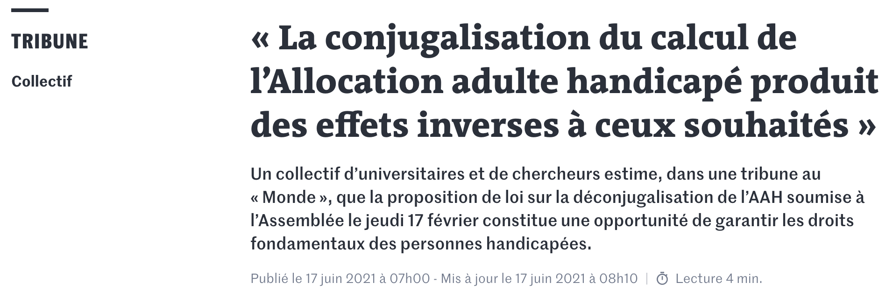

Tribune
Notre collectif « Le prix de l’amour » a co-écrit avec le sociologue Pierre-Yves Baudot cette tribune parue dans Le Monde et signée par plus de 250 universitaires et chercheurs.

Signataires
- Pierre-Yves Baudot, sociologue, Université Paris-Dauphine
- Kevin Polisano, chargé de recherche CNRS en mathématiques appliquées
- Anne-Cécile Mouget, sociologue, Université de Caen
- Emmanuelle Kristensen, ingénieure de recherche CNRS
- Nicolas Duvoux, sociologue, Université Paris-8
- Didier Fassin, anthropologue et sociologue, Institut d’études avancées, Princeton, chaire de Santé Publique au Collège de France
- Emmanuelle Fillion, sociologue, École des Hautes Études de Santé Publique
- Dominique Méda, sociologue, Université Paris-Dauphine
- Isabelle Ville, sociologue, EHESS
- Hélène Périvier, économiste, Sciences Po Paris
- Muriel Pucci, économiste, Université Paris 1
- Michaël Zemmour, économiste
- Shakespeare Tom, sociologue, LSHTM, Londres
- Silvera Rachel, économiste Université Paris-Nanterre
- Darmon Muriel, sociologue, CNRS
- Chamorro Elena, Études Hispaniques, Aix-Marseille Université
- Morin Cécile, histoire contemporaine, Université Lyon 2, LER
- Moreau Delphine, sociologue, enseignante-chercheuse, EHESP, Laboratoire Arènes
- Rapegno Noémie, géographe, EHESP, Laboratoire Arènes
- Puiseux Charlotte, psychologue et philosophe
- Froidevaux-Metterie Camille, science politique, Université de Reims
- Théry Irène, directrice d’études, Sociologie, EHESS
- Chemla Gilles, directeur de recherches, CNRS
- Marcellini Anne, sociologue, Université de Lausanne
- Ravaud Jean-François, santé publique, INSERM, CERMES3
- Gardou Charles, anthropologue, Université Lumière Lyon 2
- Stiker Henri-Jacques, HDR en anthropologie, associé au Laboratoire Identités, cultures, territoires. Université Paris Diderot
- Pranchère Jean-Yves, théorie politique, ULB
- de Gaudemar Martine, Philosophie, Universite Paris-Nanterre
- Robelet Magali, sociologue, Université Lyon 2
- Dirringer Josépha, enseignante chercheuse en droit social, Université Rennes 1, IODE (UMR 6262)
- Carbonnier Clément, Economie à l’Université Paris 8 Vincennes – Saint-Denis, LED
- Ancet Pierre, Philosophie à l’université de Bourgogne (UMR CNRS 7366)
- Baudelot Christian, sociologue
- Koenig Gaspard, écrivain et philosophe
- Le Blanc Guillaume, philosophie, Université de Paris
- Zineb Rachedi, MCF, sociologie, INSHEA, Grhapes, UPL
- Agrikoliansky Eric, Science politique, Université Paris Dauphine-PSL, IRISSO
- Quentin Bertrand , philosophe, Université Gustave Eiffel, LIPHA
- Dubois Vincent, sociologue et politiste, Université de Strasbourg, SAGE
- Popa-Roch Maria, psychologie sociale, Université de Strasbourg
- De Cock Laurence, université de Paris
- Schijman Emilia, sociologue, CNRS, Centre Maurice Halbwachs (EHESS-CNRS-ENS)
- Wolfarth Claire, informatique et sciences du langage, Université Grenoble Alpes
- Cardascia Pierre, docteur en philosophie, chef d’entreprise.
- Gindrier Nicolas, doctorant en mathématiques appliquées, laboratoire TIMC, Université Grenoble-Alpes
- Aucante Yohann, politiste, EHESS, CESPRA
- Bouquet Marie-Victoire, sociologie, Chaire Santé SciencesPo
- Chabert Anne-Lyse, philosophie, CNRS, Laboratoire SPHERE, Université de Paris
- Circé Furtwängler, philosophie, Université Paris 1 Panthéon-Sorbonne
- Corot Guilhem, philosophie, EHESS, Institut Jean Nicod
- Dubois Jean-Etienne, histoire , université Blaise-Pascal
- Le Clainche – Piel Marie, Sociologue, CNRS
- Bouchet Célia, sociologie, Sciences Po, OSC-LIEPP
- Cervera, Melaine, Sociologue, Université de Lorraine
- Eyraud Benoît, sociologue, Université Lyon 2, Centre Max Weber
- Degros, Eric B., droit, société Handi Coach
- Brégain Gildas, histoire, CNRS, EHESP
- Vignon Sebastien, science politique, UPJV
- Pagès Stéphan, linguistique hispanique, Aix-Marseille Université
- Dumonteil Julie, histoire des idées, Université de La Réunion
- Dany Lionel, Psychologie Sociale de la Santé, Aix-Marseille Université
- Tajri Yacine, ATER en STAPS, Université Gustave Eiffel, ACP
- Chatot Myriam, sociologue, Irisso
- Aim Marie-Anastasie, psychologie sociale
- Le Perron Corto, histoire et sociologie, EHESS et UT2J
- Baldrich Francisca, sociologie, CEMS, EHESS
- Escuriet Meddy, Géographie, UMR Territoires, Université Clermont Auvergne
- Martin Elise, Géographie, LAGAM, Université Paul Valéry, Montpellier
- Fanny Jaffrès, sociologie, EHESP, Cresppa-LabToP
- Pérez Laure, études hispaniques, CRIMIC-Sorbonne Université
- Tcherkassof Anna, psychologue, Université Grenoble Alpes
- Delmas Florian, psychologue social, Université Grenoble Alpes
- Peizerat Gael, études de genre, Université Paris 8
- Bretelle-Establet Florence, historienne, CNRS & Université de Paris
- Bas Jérôme, sociologue, Université Paris 8
- Pivoteau Sébastien, histoire contemporaine, Université de Reims Champagne-Ardenne
- Favreau Jean-Marie, informatique, LIMOS UMR CNRS 6158, Université Clermont Auvergne
- Doé Marion, sociologie, IRIS-EHESS
- Vidal Pauline, psychologie sociale, CLLE, Université Toulouse 2 Jean Jaurès
- Martinet Gilles, géographe, UPEC
- Buchter Lisa, sociologue, emlyon business school, OCE
- Amaro Romain, sociologie, Université Paris Nanterre
- Gil Françoise, sociologue
- Tricou Josselin, sociologue, INSERM, IRIS
- Nau Jean-Philippe , Gestion, Université de Lorraine
- Gollac Sibylle, sociologie, CNRS, CRESPPA-CSU
- Bossard Suzy, sociologue, Université de Brest (Labers, UBO)
- Achille Marie, histoire de l’art, Université de Montréal ( Québec )
- Colombe Rachel, Etudes de genre, LEGS, Université Paris 8
- Schetrit Olivier, Anthropologie sociale et visuelle, CNRS – Cems – Ehess
- Lauriot dit Prévost Nicolas, sociologue indépendant
- Lefève Céline, philosophe, Université de Paris
- Boudinet Mathéa, sociologie, OSC-LIEPP, Sciences Po
- Nève Margaux, sociologie, EHESS, IIAC
- Segon Michaël, sociologue, Céreq
- Keck Jean-Baptiste, mathématiques appliquées, LJK, Université Grenoble Alpes
- d’Arripe Agnès, sciences de l’information et de la communication, HADéPaS, Institut Catholique de Lille
- Perrin-Heredia Ana, sociologie, CNRS, CURAPP-ESS
- Chappe Vincent-Arnaud, sociologue, CNRS – CEMS
- Mazaleigue-Labaste Julie, philosophe, ISJPS, CNRS, Université Paris 1-Panthéon Sorbonne
- Palomares Elise, socio-anthropologue, Université de Rouen Normandie/DySoLab
- Richard Lucile, théorie politique, CEVIPOF, Sciences Po Paris
- Chauvin Pierre-Antoine, sociologie, Université Paris Nanterre
- Epstein Renaud, science politique, Sciences Po Saint-Germain-en-Laye
- Talpin Julien, science politique, CNRS, CERAPS/Université de Lille
- Teke Nicole, sociologie, IDHE.S Nanterre
- Deville Clara, sociologie, CSO, Sciences Po Paris
- Leblanc Audrey, histoire culturelle et visuelle, EHESS-INA (2020-21)
- Boucherie Alexia, sociologie, Université de Bordeaux (Centre Emile Durkheim)
- Borelle Céline, sociologue, SENSE (Orange labs)/CEMS (EHESS-CNRS-INSERM)
- Delporte Muriel, sociologue, Université de Lille
- Lefebvre Céline, sociologie, Université de Rennes 2
- Aillères Margaux, sciences de l’éducation et de la formation, Université de Bordeaux
- Hédi Soula, Biologie des Systèmes (Sorbonne Université)
- Mineikos Sophia, Sciences de l’Homme, Anthropologie, Ethnologie, Université Lumière Lyon II
- Perrin Marion, Sciences de l’éducation, USPN – Paris 13
- Guiot Charlotte, langues et littérature médiévale, Université Grenoble Alpes
- Dupraz Aleks, chercheur·euse indépendant·e, chargé·e de cours, Université Grenoble Alpes
- Winance Myriam, sociologue, CERMES3, INSERM
- Blanchard Emmanuel, Science politique, Université de Versailles Saint-Quentin-en-Yvelines.
- Bereni Laure, sociologue, DR CNRS, CMH.
- Gatti Laurence, Droit privé, Université de Poitiers
- Cailleau Aurélie, Biologie, formatrice en santé publique, CSRS (Côte d’Ivoire)
- Assaf Marie, études politiques, EHESS
- Popescu Cristina, sociologue, CEMS-EHESS / Université de Bielefeld
- Leclercq-Samson Adeline, statistique, Université Grenoble Alpes
- Eideliman Jean-Sébastien, sociologie, Université de Paris, CERLIS
- Boulangé Antoine, Sciences de la Vie et de la Terre (Inspé – Sorbonne Université)
- Guay, Natacha, Sociologie, LISST, Université Toulouse – Jean Jaurès
- Mekdjian Sarah, géographie, Université Grenoble Alpes
- Revillard Anne, sociologue, Sciences Po
- Brouillet Julie, immunopsychiatrie, Institut Mondor de Recherche Biomédicale, UPEC/INSERM
- Berlinski Elise, sciences de gestion, ESCP Business School, Paris
- Brasseur Pierre, sociologue, Université Grenoble-Alpes
- Batailler Cédric, psychologie sociale, Université Grenoble Alpes
- Labbouz Benoît, Gestion de l’environnement, AgroParisTech
- Zaffran Joël, sociologie, Université de Bordeaux
- Gautero Jean-Luc, philosophie des sciences, Université Côte d’Azur
- Coffin Jean-Christophe, historien, Université Paris 8
- Vennetier Soline, Histoire, EHESS, CRH
- Katouzian-Safadi Mehrnaz, Histoire des Sciences, CNRS, SPHERE CNRS
- Malinowski Sylvie, sociologue, LISST, Université Toulouse Jean Jaurès
- Falhun Erell, études de genre, Université Paris 8
- Lejeune Aude, Sociologue, CNRS, CERAPS/Université de Lille
Dufour Pierre , sociologue, Université Toulouse Jean Jaurès- Bory Anne, sociologue, Université de Lille
- Lévêque Sandrine, Science politique, Sciences Po Lille
- Glòria Casas Vila, sociologue, CERTOP, Université Toulouse Jean Jaurès
- Perrier Gwenaëlle, politiste, Université Sorbonne Paris Nord
- Rabouin David, philosophe des sciences, CNRS, Université de Paris
- Vivès Claire, sociologue, CNAM
- Establet Colette, historienne
- Establet Roger, sociologue
- Mazel Florian, historien, Université Rennes 2
- Coutrot Antoine, Sciences Cognitives, CNRS, LIRIS, Université de Lyon
- Israël Liora, Sociologue, EHESS, Paris
- Gimenez Paul, biotechnologies, Université Grenoble Alpes
- Bertrand Louis, sociologue, EHESS, PHS
- Bugnon Fanny, historienne, Université Rennes 2
- Fabre Alice, économiste, Aix Marseille Université
- Chemla Karine, Historienne des sciences, CNRS-Université de Paris
- Schmitt Stéphane, historien des sciences, CNRS, Nancy
- Orian Weiss Catherine, politiste, RMIT University
- Ruet Céline, juriste, Université Sorbonne Paris Nord
- Clavier Evelyne, Université Bordeaux Montaigne TELEM,
- Trani Jean-Francois , santé publique, Washington University in St Louis, Missouri, Etats-Unis
- Petiau Anne, sociologue, Centre d’étude et de recherche appliquées – Buc Ressources, LISE/Cnam-CNRS
- Eydoux Anne, économiste, Cnam
- Benvenuto Andrea, philosophie, Centre d’étude des mouvements sociaux, EHESS
- Gaultier Maud, Littérature Latino-américaine, Aix Marseille Université
- Issehnane Sabina, économiste, Université de Paris, LIED
- Rohmer Odile, Psychologie sociale, Université de Strasbourg
- Clément Céline, psychologie et sciences de l’éducation, Université de Strasbourg
- Hirsch Fabrice, phonétique clinique, Université Paul Valéry Montpellier
- Thizy Laurine, sociologie, Université Paris 8, CSU CRESPPA
- Achin Catherine, politiste, Université Paris-Dauphine
- Sanrey Camille, psychologie sociale, CeRCA – UMR CNRS 7295, Université de Poitiers
- Strauch Marianne, sciences de gestion, ESCP Business School, Paris
- Guiraudon Virginie, CNRS, Centre d’études européennes et comparées de Sciences Po
- Servat Véronique, Histoire, Centre d’Histoire Sociale des Mondes contemporains, Paris 1.
- Chemla Sophie, mathématiques, Sorbonne Université.
- Baeyens Céline, psychologie clinique, Université Grenoble Alpes
- Confalonieri Sara, Historienne des sciences, Université de Paris
- Le Gall Philomène, hydrologie, Université Grenoble Alpes
- Math Antoine, économiste, Institut de Recherches Economiques et Sociales (IRES)
- Derguy Cyrielle, psychopathologie, Université de Paris
- Puissant Emmanuelle, économie, Université Grenoble Alpes
- Cambon Laurent, Sciences de l’éducation, Université Grenoble Alpes
- Aucouturier Valérie, philosophie, Université Saint-Louis, Bruxelles
- DARJ Clémentine, ingénieure d’études CNRS, GIPSA-lab (UMR 5216)
- Foos Nicolas, Ingénieur chercheur CEA Grenoble
- Baudin Lucas, informatique, LAMSADE – Université Paris-Dauphine
- Biland-Curinier Emilie, Sociologie, Sciences Po, CSO, IUF
- Cuenot Marie, sociologue, Ecole des Hautes Etudes en Santé Publique
- Godeau Emmanuelle, HDR santé publique, responsable de la formation des médecins de l’éducation nationale, Ecoles des hautes études en santé publique
- de Place Anne-Laure, sciences de l’éducation, Université Grenoble Alpes
- Le Hénaff Benjamin, sciences de l’éducation, ACTé, Université Clermont Auvergne
- Strauch Salomé, Muséum National d’Histoire Naturelle, Eco-Anthropologie (UMR 7206)
- Aubé Benoite, psychologie, Université de Paris
- Rojo Severiano, Aix Marseille Université
- Blondlot Christine, retraité Fonction publique hospitalière
- Frasch Delphine, philosophie à l’ENS de Lyon (laboratoire Triangle)
- Fournier Jennifer, sciences de l’éducation, Responsable du Master Référent.e handicap, Université Lumière Lyon 2
- Damamme Aurélie, sociologue, Université Paris 8
- Sengers Arnaud , Mathématiques, Insa Lyon
- Vincent Fanny, sociologue et politiste, Triangle, Université Jean Monnet Saint-Etienne
- Lefebvre Julie, linguiste, Université Paris Nanterre
- Escalle Elise, philosophie, Paris Nanterre (HAR/Sophiapol)
- Buessler Emilie, mathématiques appliquées, LJK, Université Grenoble Alpes
- Brugère Fabienne, philosophie, Université Paris8
- Trouillon Théo, mathématiques appliquées, Université Grenoble Alpes
- Felician Olivier, neurologie, Aix Marseille Université & APHM
- Guyon Stéphanie, science politique, Université de Picardie Jules Verne
- Hélène Hernandez, journaliste, co-animatrice de l’émission Femmes libres sur Radio libertaire 89.4
- Blanchard Soline, sociologue, Université Lumière Lyon 2
- Chedaleux Delphine, Sciences de l’information et de la communication, Université de Technologie de Compiègne
- Krzywkowski, Isabelle, Littérature générale et comparée, Université Grenoble Alpes
- Marques Ana, sociologue, EPS Ville Evrard
- Chauviré Christiane, Philosophe, Université Paris 1
- Jacquemart Alban, sociologie et science politique, Université Paris-Dauphine
- Gautié Jérôme, économiste, Université Paris 1
- Fyhrer Joffrey, philosophie/sciences affectives, Université de genève (UNIGE)
- Sage Pranchère Nathalie, historienne, CNRS
- Aulombard Noémie, science politique, ENS de Lyon, Centre Max Weber
- Bessière Céline, sociologue, Université Paris-Dauphine, IRISSO
- Flécher Claire, sociologue, Université Lyon 2, Centre Max Weber
- Harnay Sophie, économiste, Université Paris Nanterre, EconomiX
- Laurent Théodore,histoire, Université de Picardie Jules Verne
- Marinthe Gaëlle, psychologue sociale, SWPS University
- Joselin Laurence, IR psychologie, INSHEA, Grhapes
- Laguel Yassine, Mathématiques appliquées, Université Grenoble Alpes
- Amato Stéphane , Sciences de l’Information et de la Communication, Université de Toulon, laboratoire IMSIC
- Jury Mickaël, psychologie sociale, Université Clermont Auvergne.
- Madiot Justine, études de genre, LEGS, Paris 8
- Bros Julie, doctorante en Psychologie Clinique de la Santé, Université Grenoble Alpes, membre associé au LIP PC2S
- Ludovic Roch, Psychologue clinicien, D-ITEP le Willerhof
- Mange Jessica, psychologie sociale, université de Caen
- Pagnon David, Biomécanique et informatique, Université Grenoble Alpes
- Gonçaves Cécile, Docteure en études politiques, EHESS
- Cohen Joanna, psychologie sociale, Université Grenoble Alpes
- Massip Estrella, Aix-Marseille Université
- Léa Laval, Sciences de l’éducation, Université Paris8 Saint-Denis.
- De Anna, Francesca, psychologie-neuropsychologie, AP-HM
- Hugo Bertillot, sociologue, Université catholique de Lille, HADéPaS
- Lefevre Lisa, sociologue, Université de Strasbourg, UR 1342
- Robin-Radier Suzanne, sociologue indépendante, Université Lyon 2 GRePS
- Pallesi Lucie, doctorant.e en STAPS, Université Paris Saclay
- Lansade Godefroy, anthropologue, Université Paul Valéry Montpellier 3, CRISES
- Gonçaves Cécile, Docteure en études politiques, EHESS
- Pascale Moulévrier, Sociologue, CENS, Université de Nantes
- Arthur Macherey, Doctorant en mathématiques, Centrale Nantes
- Perle Abbrugiati, Professeur d’italien, Université d’Aix-Marseille
- Amandine Cormier, enseignante
- Bousbai Asma, sociologie et études féministes, Université de Paris
- Boué Axell, doctorant en Art, université Paul Valéry Montpellier3
- Murielle Mauguin, MCF Droit public, INSHEA
- Louis Bourgois, Politiste, Laboratoire PACTE / Odenore, Grenoble